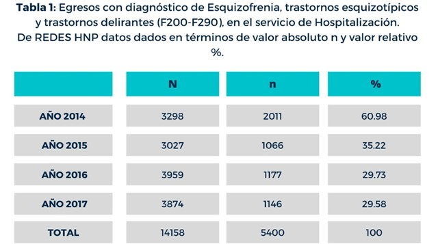

Cimientos de la Esquizofrenia
2.1 Estadisticas de niños y adolescentes diagnosticados con esquizofrenia
Las enfermedades o trastornos mentales son afecciones que impactan su pensamiento, sentimientos, estado de ánimo y comportamiento. Pueden ser ocasionales o duraderas (crónicas). Pueden afectar su capacidad de relacionarse con los demás y funcionar cada día. Podríamos definir un trastorno psicológico, también conocido como trastorno mental, como un patrón de síntomas psicológicos o de comportamiento que afectan a varias áreas de la vida y/o crean alguna clase de malestar emocional en la persona que lo padece. Advertimos que no somos una institución de medicina ni centro de educación, salud o investigación, nosotros nos dedicamos a recabar información clasificada y certificada por expertos sobre el trastorno de esquizofrenia para poder facilitar su divulgación ya que este tema cuenta con diversos prejuicios, por ello buscamos una divulgacion facil y efectiva a traves de esta pagina web.
La esquizofrenia es poco común en los niños menores de 12 años de edad y difícil de identificar en las primeras fases. Con frecuencia, ocurre un repentino comienzo de los síntomas psicóticos de la esquizofrenia entre la adolescencia media hasta el final de la adolescencia. Las estadísticas muestran que la esquizofrenia afecta aproximadamente al 1% de los estadounidenses. Un niño que nace en una familia con 1 o más familiares afectados por la esquizofrenia tiene mayores probabilidades de desarrollar esquizofrenia que un niño que nace en una familia sin historial de esquizofrenia.
Luego que a una persona se le ha diagnosticado esquizofrenia en una familia, la probabilidad de que a un hermano también se le diagnostique esquizofrenia es del 10%. Si un padre tiene esquizofrenia, la probabilidad de que un hijo tenga este trastorno es del 10%. Los riesgos se incrementan con múltiples familiares afectados.
La prevalencia de esta enfermedad a lo largo de la vida se ha reportado entre 0.3% y 1.6% y su incidencia de 0.002% a 0.011%. Una tercera parte de los pacientes con esquizofrenia inicia el padecimiento antes de los 18 años y 6% antes de los 16 años.
Los trastornos mentales y neurológicos representan el 22% de la carga total de enfermedades en América Latina y el Caribe, y resulta evidente que los mismos tienen un impacto en términos de mortalidad, morbilidad y discapacidad en todas las etapas de la vida.
La esquizofrenia es un trastorno mental grave que según lo indicado por la Organización Panamericana de la Salud (OPS) afecta a más de 21 millones de personas en todo el mundo, entre el 1% y el 1.5% de la población mundial sufre esquizofrenia y se calcula a partir de esta cifra que en Costa Rica hay unas 50.000 personas que padecen de esquizofrenia, Según datos de la OPS, este trastorno es más frecuente en hombres que en mujeres. Asimismo, los hombres desarrollan esquizofrenia generalmente a una edad más temprana sin tratamiento, se asocia a una discapacidad considerable y puede afectar al desempeño educativo y laboral.
Sin tratamiento se asocia a una discapacidad considerable y puede afectar el desempeño educativo y laboral. La esquizofrenia es la principal causa de consulta en los servicios del Hospital Nacional Psiquiátrico Manuel Antonio Chapuí (HNP) donde un 30% de los ingresos anuales son por esa causa. 25,6% (n=1.380) de los casos fue por Trastorno Psicótico agudo, mientras la esquizofrenia Paranoide significa el 22,2% (n=1.198) seguida Esquizofrenia indiferenciada 19,5% (1050) el 59% (n=3186) consume algún tipo de sustancia psicoactiva y además en los pacientes con esquizofrenia, el 68% presentaron un único internamiento, mientras que el 32% reportaron más de un internamiento, el 20% presentó dos o más internamientos durante el mismo año.
